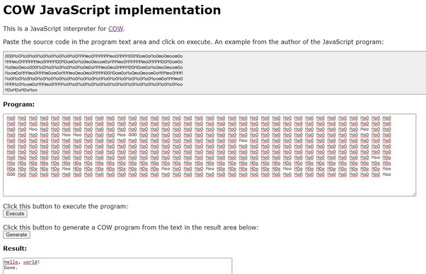

Aplicación:
Cow es un lenguaje de programación muy peculiar y no muy utilizado en la industria. Sin embargo, puede ser utilizado en situaciones específicas, como en la educación y en la resolución de problemas matemáticos complejos.
- En la educación, Cow puede ser utilizado para enseñar a los estudiantes conceptos básicos de programación, como la estructura de control de flujo y la lógica de programación. Debido a que Cow utiliza comandos simples y una sintaxis fácil de entender, los estudiantes pueden aprender a programar de manera más efectiva.
- En la resolución de problemas matemáticos complejos, Cow puede ser utilizado para escribir programas que realicen cálculos complejos y procesamiento de datos. Aunque no es un lenguaje de programación eficiente, puede ser útil para resolver problemas que requieren una gran cantidad de cálculos y procesamiento de datos.
Cow es un lenguaje de programación interesante y divertido de aprender, pero su uso es limitado en la industria y se utiliza principalmente con fines educativos o para resolver problemas matemáticos específicos.
